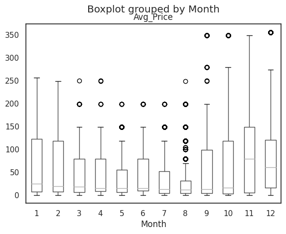

Box Plot : Visualizing Distribution Of Data
Boxplots are drawn as a box with a vertical line down the middle, and has horizontal lines attached to each side. A box plot is a standardized way of displaying the distribution of a data set based on the five-number summary of data points: the minimun, first quartile (Q1), median, third quartile (Q3) and maximum. They can also tell you if there are outliers, if the data are symmetrical, how tightly your data is grouped and how your data is skewed.
(You can find the analysis that the box plot was greated using Python here)

Area Chart : Showing Trends Over Time
Area chart is a visual representation of data that utilizes both lines and filled areas to convey information. This type of chart is particulary effective in showcasing data trends and variations over a specified period or accross different categories.
We can use area charts to show differing trends over time. It is best to use when there is data expressed as total, there are time periods to compare, you want to communicate an overall trend, not individual values or there are multiple data series with part-to-whole relationships, or cummulative series of values.
Examples :
1. When we want to observe the number of sales for different payment methods per month.
2. Observe how population grows over time in different countries.
(You can find the analysis that the area chart was created using Python here)

Funnel Chart : Tracking The Flow Of Visitors
The funnel chart takes its name from its shape, which starts from a broad head and ends in a narrow neck. They are most often used in business or sales context, where we need to track how a starting set of visitors or users drop out of a process or flow.
It is best to use it when we have at least 3 stages. Only use it when you are sure that the number of users, customers, or any other data type in the first step will be larger than the data values in the final step. Otherwise a simple pie chart or a single stacked bar will do the work.
Examples :
1. How many emails we sent to our customers, how many saw them, how many clicked on the link and how many stayed more than a minute in our page.
2. How many applicants applied for a job, how many selected for an interview, how many got to the second interview and how many where in the final selection.